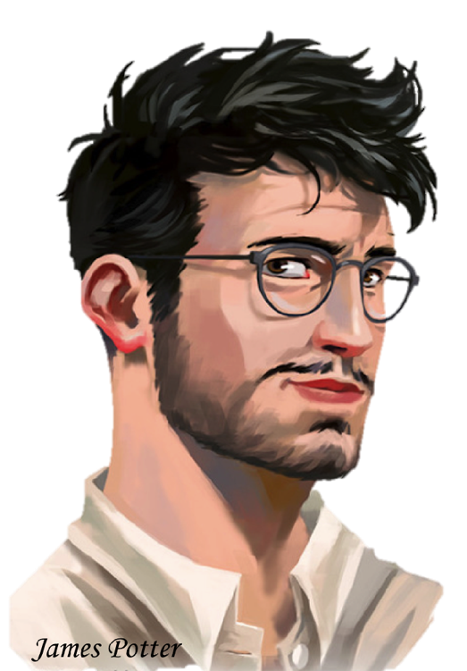

Chapter 9

Winter Holidays
The morning after Harry’s return home for winter break, she set off to the Serpent’s Storeroom with her crates for Krait in tow. Diagon Alley was bustling with people doing their Christmas shopping, and Harry narrowly avoided collisions several times. As she passed Eeylops Owl Emporium, the boy sweeping the feathers on the stoop glanced up at her and grinned. She waved, recognizing him from the rare times she had gone all the way to the Dancing Dragon before it burnt down. He was the cook’s son, and she was pretty sure he was called Jason.
Seeing Jason hurry off through the crowd after waving back to her, Harry wasn’t much surprised when Leo ambled up beside her as she turned onto Knockturn Alley a few minutes later.
“What’s a sprout like you doing in a place like this?” He asked, quirking an eyebrow at her above bright hazel eyes.
“Avoiding shady characters like you, if I have any sense,” Harry said, shrugging as best she could with three crates of potions in her hands. They were the ordinary bottles she’d been using since she was unable to pick up Krait’s decorative bottles while she was at school, and were a bit heavier than Krait’s more delicate ones.
Leo chuckled and took the top crate from her arms without breaking stride, “So you’ve come to Knockturn Alley to avoid shady folk? I thought you were supposed to get smarter when you went away to school.”
Harry shook her head solemnly as they turned down the side alley toward the Serpent’s Storeroom, “School isn’t for learning, Leo; it’s for avoiding the friends you can only put up with for three months out of the year.”
He laughed outright at that as they walked into Krait’s apothecary, “I suppose I asked for that one.”
“Leo?” Krait glanced over his shoulder from where he was stocking a row of Wit-Sharpening Potions, “I told you yesterday I haven’t got your father’s dragon liver in—is that Harry? Well met, kid. Wasn’t expecting you until tomorrow.”
Harry gave Krait a nod in greeting, “I thought I’d need a day to relax and re-adjust to full-time brewing, but I grew bored with nothing to do, so I’m here to pick up next week’s potion list.”
Krait sent her a knowing look, “One day off was really too much for you? That’s just sad, kid.”
“No one lives forever,” Harry said, “Why not do all you can while you can?”
“Because there’s such a thing as enjoying life to the fullest,” Leo said, shaking his head.
“Brewing potions is enjoyable,” Harry said.
Leo and Krait exchanged exasperated looks.
“Kid, I make potions for a living, and Leo’s been brewing under his father’s eye since he was old enough to hold a stirring rod,” Krait said bluntly, “We appreciate potions more than most, but you take the whole thing too far. It’s obsessive, and slightly worrying in a lad your age.”
Harry ignored them in favour of switching out the full bottles she’d brought for some of Krait’s empty ones.
“Well, it’s your business, kid,” Krait grunted when Harry came back from the back room with three stacks of crates and set them gently on the floor, “Just don’t overdo it. Can’t have my brewer making himself sick.”
“Your brewer?”
All three of them turned at the sound of a voice interjecting into their conversation. A tall man with brown hair and familiar hazel eyes was standing in the doorway to the shop. Leo had left the door propped open, and the sun was behind the shop that day, so there had been neither sound nor shadow to give away the newcomer’s presence.
“Is this him, then?” the man said, stepping into the shop and dusting off his dark grey overcoat, “Bit young, isn’t he?”
“Father,” Leo’s voice had an odd quality to it, “What are you doing here?”
Harry’s eyes widened and she looked between Leo and the newcomer assessingly. They had the same slender build, though Leo was a bit shorter and moved a tad more gracefully. The hair and eyes were the same as well, but the newcomer’s face was more angular, and he held his mouth more tautly.
The man looked at Leo with amusement, “I came to check on the dragon liver, since you said Krait didn’t have it yesterday. Had I known you’d be coming to check up on it again, though, I mightn’t have bothered.”
Krait snorted, “Don’t think he was planning on coming over here at all until about ten minutes ago.”
Leo shot Krait a displeased look, to which Krait responded with an innocent grin.
“I guess it’s a good thing I did stop in, however,” the other man said, peering down at Harry in undisguised interest, “As I’ve finally got to meet Mr. Krait’s elusive new brewer.”
Harry glanced at Krait questioningly. He sighed and said, “I’ve told you at least half a dozen times, Master Hurst, that my new brewer prefers to remain anonymous.”
“I can see why,” Hurst said wryly, giving Harry a once-over “Are you sure he’s the one brewing those Blood-Replenishers? I guess that does explain it—I thought they seemed a bit amateurish.”
Harry bristled silently, her eyes flaring a bit with suppressed indignation, and Potion Master Hurst grinned down at her like a shark.
“Oh-ho. Would you look at that offended pride? I suppose he must be your brewer after all,” Hurst chuckled, “You can always tell which potioneer brewed something by seeing who gets the most offended when you insult it.”
Harry let her indignation bleed out of her, and Leo covered his eyes with his hand dramatically, “Really, Father, mind games already? You’ve only just met the poor kid.”
“Although ‘met’ seems to be putting too fine a point on it,” Harry said, eyeing Leo’s father a bit warily. She couldn’t tell yet if he meant good or ill, but he had just moved himself firmly away from the “harmless” label with that little trick.
“Quite,” Mr. Hurst said, “I am Malcolm Hurst, Aldermaster of the Potions Guild, and Leo’s father, dubious though that particular distinction might be.”
Harry inclined her head politely, “I am Harry, Leo’s friend, and as you’ve already surmised, one of Krait’s brewers. And my Blood-Replenishers are certainly not amateurish,” she added, frowning.
Master Hurst just smiled innocently down at her. Harry could see where Leo had got a lot of his more infuriating demeanour.
“Okay, mystery solved,” Leo said, clapping his hands together with an air of finality, “Unfortunately, Mr. Krait hasn’t got your dragon liver today, so try checking back in tomorrow.”
Master Hurst glanced at his son with wry amusement, “It’s almost like you’re trying to get rid of me, Son. Surely young Harry here doesn’t need your protection so desperately. Besides, what do you imagine I’ll do if I remain for the duration of a polite conversation?”
Leo scowled a bit, but didn’t say anything.
Master Hurst turned back to Harry with a smile that caused a nervous increase in her blood pressure, “Well, Harry, is it? Have you a last name?”
“Yes, I do,” Harry said.
Hurst waited for a couple beats, then said, “Ah. Well, Harry, a couple of months ago a good friend of mine, one Horace Burke, showed me a rather impressive sample of Blood-Replenisher, and informed me that there was a new brewer in London. As Aldermaster of the Potions Guild, it is one of my responsibilities to keep an eye on all of the independent potion brewers, both to keep abreast of the Guild’s competition and to prevent any freelance brewers from causing… shall we say, disruptions, in the potions community with their commodities.”
Harry frowned slightly, “Am I in some kind of trouble, Master Hurst? I use only commercial grade ingredients at the very least, and I have sold no patented potions that I am aware of.”
Hurst shook his head, “No, no, you misunderstand. At first, I was concerned when I learnt that Krait was keeping a mysterious new brewer all to himself—new potioneers don’t just come out of nowhere, you know. After inspecting all of your work, however—at least, the work I could wheedle Krait into admitting was yours—I could find no serious flaws with it. It was then I realized we must be dealing with an unknown talent, and as part of the Aldermaster’s responsibilities include recruitment, I thought it best if I bent my will toward discovering just who Krait’s mysterious brewer was.”
“I see,” Harry said slowly, still not sure where the man was going with all of this.
Master Hurst tilted his head at her consideringly, “It makes sense, in a bizarre sort of way. I thought you must be foreign, you see, because we keep a close eye on all of the magical schools in Britain, and when a NEWT student shows particular promise the resident Potion Master informs the Guild at once. You are so young, however, that I suppose your Potions Master simply hasn’t notified us of your talent yet.”
Harry shook her head, “I am a student at the American Institute of Magic.”
Hurst narrowed his eyes a bit, “I see. Well, it is true that I am not on the best of terms with Master Tallum, but if you are of British nationality, he would still have sent me your name eventually, given the level you are already brewing at.”
Harry tried not to panic. It would be bad if Master Tallum and Master Hurst ever compared notes on any talented kids named Harry. Hurst had said they weren’t very good friends, so maybe it wouldn’t ever come up, but it was looking more and more as though she wouldn’t be able to get out of this conversation without a lot more truth than she generally proffered.
“I am not in the Potion track,” Harry said, “So it might not occur to him to mention me.”
Hurst looked rather incredulous, “Not in the potions track? Why ever not?”
Harry shrugged a bit helplessly, “It’s a long, very complicated story, but suffice to say that I am not. I study potions in my free time.”
“So it is just a hobby, then?” Master Hurst looked inordinately disappointed.
“Not exactly,” Harry said carefully. The conversation was getting trickier to navigate. Maybe she should stop being half-herself and just be completely Harry Potter for Master Hurst. In fact, that would probably be the wisest course, considering that her career as a potions maker in the future would likely depend greatly on this man’s opinion of her. She really couldn’t afford to be caught out lying to him. “It is my intention to seek a career in potion making, but for numerous reasons I chose not to use my time at AIM on the potions track. AIM has a phenomenal Healing track, which I thought it in my interest to take advantage of, particularly considering the fact that their Potion track is… forgive me, less than top-notch.”
Master Hurst nearly choked on his laughter, “Oh, what I wouldn’t give to see old Tallum’s face if he heard that. I can’t exactly argue with that assessment. On the other hand, though… studying potions on your own is quite difficult, not to mention dangerous.”
“I take proper precautions,” Harry said firmly.
“I didn’t mean it as censure, but praise,” Hurst said, “But I did wonder… well, the reason I sought to discover the identity of Krait’s brewer was to offer him a place within the Guild.”
“If I pass my Mastery, you mean?” Harry asked, interestedly. Usually one had to petition the Guild for membership after finishing their apprenticeship and taking their Mastery exam. The apprenticeship was optional, of course, but few ever passed the exam without one.
“Well, originally it was either that or offer to set the brewer up with an apprenticeship if he hadn’t already taken his Mastery, but with you being so young…” Hurst trailed off, thinking, “What are you doing next summer?”
“Working here, I suppose,” Harry said, “Why?”
“How would you feel about an internship at the Guild?” Hurst asked, eyes gleaming.
“Now wait just one second!” Krait broke in exasperatedly, “You said you weren’t going to steal my brewer away.”
Hurst turned amused eyes on Krait, “I said if you told me who he was I wouldn’t steal him from you. You didn’t tell me, and besides, I’m not stealing. I’m bribing.”
Harry gazed up at Master Hurst with something like awe in her chest and disbelief in her expression, “The Guild only gives internships to three students a year.”
“That’s true,” Hurst said, smiling.
“And those three are always at least at journeyman level.”
“They are,” Hurst said, “But then… so are you.”
Harry couldn’t suppress a wide grin at hearing that from the Aldermaster of the Potions Guild. Still, she said, “Not officially. I don’t have my NEWT in potions, and I haven’t declared formally my intention for Mastership.”
“Details,” Hurst said, brushing the words away unconcernedly, “Am I the Aldermaster or not? Do you want the apprenticeship?”
“Yes,” Harry said fervently, “But… what about Leo?”
“My son?” Hurst turned surprised eyes toward Leo, who was listening to the conversation with an air of resigned acceptance, “What about him? You’ll still have time to see one another, I dare say.”
“I mean, won’t Leo be graduating from his home-schooling program this spring?” Harry clarified, “He should get the internship, if there is one available.”
Hurst snorted indelicately, “My son? Intern at the Guild? He’d sooner swallow bubotuber puss.”
Harry was confused, “I thought you wanted to be a potioneer, Leo.”
Leo shrugged, “Did I say that? I mean, I don’t hate potions, so I guess I could.”
Master Hurst sighed dejectedly, “You see what I put up with? No passion for potions at all in this one.”
“You should take it,” Leo said, grinning down at Harry, “It will be hard to make a living in Britain without having attended a British magical school. The Guild could help a lot.”
“So, you really don’t want it?” Harry asked, rather incredulous that someone could dismiss an internship at the Potions Guild so cavalierly. She supposed Leo had been facetious when he’d said potions was the most interesting thing he’d found so far, or perhaps he’d just meant in relation to the other school work he did, and not to all things in general like she’d assumed.
“Nah, I’ve got enough on my plate,” Leo said vaguely.
“Right, you wouldn’t want to lose all the time you spend wandering around doing nothing,” his father said, snorting.
Harry raised an eyebrow, but a quick headshake from Krait told her not to comment. She supposed Leo’s father might not be fully apprised of what Leo did in the Lower Alleys, though his mother seemed to know quite a bit.
“I’d be honoured,” Harry said after another moment of thought, “If you’re sure it’s okay for me to take the Internship spot.”
Harry beamed inwardly. Now she wouldn’t waste three whole months of structured potion study just because she was away from Professor Snape.
“Great,” Hurst said happily, clapping his hands together the same way Leo had done earlier, “One thing. If I’m to fill out your paperwork for the internship, I really will need a last name.”
Harry took a careful breath. Moment of truth. Was she prepared to deal with the consequences of being herself?
Well, really, she didn’t have a choice. Suppose she turned him down, turned the whole internship down—though she would have to be monumentally stupid to do so—and then later down the road he recognized her as the ungrateful brat he’d met in Krait’s apothecary. How likely was he to think well of Harry Potter the potions brewer if that happened? And she needed people to like Harry Potter, since that’s who she was going to be the rest of her life.
“Before I tell you,” Harry said, trying not to look shady, “Could I ask you not to tell my parents that I have a job here at Krait’s? It’s the reason I’ve been keeping my last name a secret, you see. They don’t much approve of Knockturn Alley, and I use the money I earn here for something I haven’t told them about. It’s not illegal, or dangerous, I just don’t want them to know. Can you do that for me, Master Hurst? Please?”
Hurst looked a bit uncomfortable, “How old are you?”
Harry stood as tall as she could without looking obvious about it, “Twelve, sir.”
“I really shouldn’t,” he muttered to himself, “But I guess it isn’t technically any of my business.”
“Just say I showed you the Blood-Replenisher,” Leo chimed in helpfully, “Say I met Harry in the apothecary Tate looks after on Diagon Alley, we got talking about potions, Harry mentioned brewing some, showed me, and I showed you. You requested a meeting, and offered Harry the apprenticeship. Simple, and nobody’s parents get unnecessarily upset.”
Master Hurst grimaced, “Well, I suppose it does have a good amount of plausible deniability going for it. All right, I agree.”
Harry smiled, “Thank you, sir. My full name is Harry Potter.”
Master Hurst stared at her and Krait spluttered while Leo just smirked.
“The Potters don’t have a son,” Hurst said, blinking.
“You’ve got to be kidding me!” Krait glared at Leo, “I suppose you knew this entire time, Your—you sneak. Harry. Harriet Potter. I suppose you thought it funny, Leo. James Potter, one of the most notorious Aurors of the last decade, and his kid working under my nose. I should have known. Like the way you treat the kid isn’t completely obvious in retrospect. ’Course he’s a bloody girl. Well, that’s just peachy.”
“Krait…”
“All this time, I’ve been letting a girl—a Potter girl, Merlin help me if she’d ever got hurt—traipse through Knockturn Alley like she owns the damn street—”
“Krait.”
“—And you letting me load the wee lass up with crates and crates of potions, not saying a thing—”
“Krait!” Leo rolled his eyes as Krait finally stopped cursing for a moment, “If you will recall, I escorted Miss Potter in Knockturn Alley every day, and carried the crates to boot.”
“You did that before you found out I was a girl,” Harry pointed out.
“I must have sensed it from the beginning,” Leo sniffed.
“A girl,” Hurst was still staring down at her, “Harriet Potter is Krait’s mysterious brewer. This is certainly a day for surprises.”
“You’re telling me,” Krait snorted grumpily, “I thought you were some kind of criminal, or orphan, and you’re practically bleeding royalty.”
Harry sighed internally at the dramatics her friends were prone to, “It’s not a big deal.”
“Yes, it is,” Leo and Krait said bluntly.
Harry turned to Master Hurst, “Is it going to be a problem, my gender?”
“Problem?” Hurst frowned, “No, I shouldn’t… ah, I see what you mean. There is a rather unfortunate lack of female Mastery students, isn’t there?”
“They make up around fifteen percent of the Adepts, and only five percent of the Master level,” Harry said frankly, “And most of the women who make it to Mastery level become independent brewers, and don’t often get published in the major potions periodicals.”
Hurst cleared his throat, “That is true. At present I believe we have only two Potions Mistresses in the country, and neither of them are with the Guild. Still, there isn’t any rule against it, of course. Just… ah… well, in any case it should not pose an issue. I was merely surprised. The invitation is of course still yours.”
“Then I would love to intern at the Potions Guild this summer,” Harry said, barely suppressing the need to beam with giddy excitement.
“Excellent,” Master Hurst clasped her shoulder briefly, before slapping his son on the back and inclining his head toward Krait respectfully, “Well, I must be getting back to my own work, then. Harriet Potter, a Potioneer. Marvelous, just wonderful. Grindel will be tickled pink.”
Hurst left without a backward glance, and Leo groaned into his hands once he was gone, “Why is he always like that? Harry, I’m really sorry about that. I knew he was poking about for Krait’s new brewer, but I didn’t think he’d just show up here like that. It’s why I’ve been checking on his ingredients for him lately. Talk about nosy, that man.”
“Your father seems nice,” Harry said unconcernedly, “It’s not a big deal.”
“But he found out all your secrets,” Leo said apologetically.
Harry was hard-pressed to smother an amused smirk. Really, though, all her secrets? “That’s okay. They were secrets of convenience, not of any real necessity. I think at this point Krait is unlikely to fire me just because I’m a girl, which was one of the main reasons for keeping my identity a secret. That, and preventing my parents from hearing about what I do with my free time.”
Krait just shook his head, “As long as your potion making doesn’t slack off, I don’t care if you’re a dancing bear.”
With that settled, Harry went to pick up the crates once more but Leo forestalled her.
“We’ll come back for the crates later,” he told Krait, putting a hand on Harry’s arm and propelling her gently toward the door, “Harry wanted to talk to me about something first.”
“Sure,” Krait snorted, and went back to stocking Wit-Sharpening Potions.
Harry allowed Leo to lead her toward Kyprioth Court without complaint, though she did throw him several questioning looks, which he ignored. She caught sight of a new building at the end of the street, where the Dancing Dragon used to stand, and smiled.
“The new Dragon looks good,” she offered.
“It does,” Leo agreed amiably, “But it’s called the Dancing Phoenix now.”
She supposed that made sense, with the whole rising from the ashes thing.
When Leo took them down a side alley that was all too familiar to Harry, no matter that it looked different in the light of day, she grew uneasy. Her hands began to shake ever so slightly.
“Where are we going, Leo?”
Leo looked down at her from the corner of his eye, “Just taking you home, as usual.”
“Home—” Harry’s breath hitched. He couldn’t be, there was no way he could know.
And yet, somehow, after a few twists and turns they arrived on Dogwood Lane. Harry’s feet carried her numbly after Leo, until he stopped in front of number seven and raised an eyebrow.
Harry stared back at him, considering whether it would cost her anything to try bluffing.
“Is this your home, Leo?” she asked, eyes showing nothing but innocent curiosity.
A faint smile tugged at Leo’s mouth, and he shook his head.
Harry allowed her face to fall in slight disappointment and confusion, “Then, where are we?”
“Very good,” Leo said, rocking back on his heels to study her face, “Believable, but as careful as your expression is now, you gave yourself away as soon as you suspected what I meant by ‘home.’ Your breathing sped up, and your eyes widened noticeably.”
Harry maintained her innocent façade, “Well, I was excited. I thought I was finally going to get to see where you lived.”
“I’d like to believe that,” Leo said, gazing down at her, “But the look in your eyes wasn’t hopeful, lass. It was scared.”
Harry turned her gaze away from her friend, and didn’t respond.
Leo pressed her, “What’s got you scared, Harry? Me? You know I’d never—”
“Why have you brought me here, Leo?” Harry asked, turning back to him calmly, “To make a point? What do you want?”
“Want?” Leo looked confused, then insulted, before his features settled on wryness, “No, it’s not blackmail I’ll be dealing in today, Harry. The only thing I want from you is the truth.”
“Just like that?” Harry couldn’t help but scoff a bit internally, even as she stayed collected on the surface, “Who says the truth is yours to demand? Whatever you think you know, leave it here, Leo. Please.”
Leo shot her a look, “Harry, it’s my job to know what goes on in these alleys.”
“Nothing’s going on, Leo. Have you had any complaints, any disturbances that you think I’m somehow responsible for?” Harry asked.
“How could I, when you’ve been in America all semester?” Leo asked.
“How indeed?” Harry countered. Then she sighed, “This is pointless, Leo. I don’t know what you were expecting me to admit, but can we forget this whole thing?”
“No,” Leo said, “Not when I still don’t understand.”
“You don’t need to understand everything,” Harry said sharply.
“I need to understand you,” Leo said just as sharply back, “This is what you spent your money from last summer on, isn’t it?” He gestured to number eight with a negligent hand, “Why? Why pay for a room you’re never going to use?”
“Who says I’m not using it?” Harry asked stubbornly. This was all going downhill too fast. The flat was supposed to be a failsafe, one that nobody knew about. Not that Leo was likely to talk to the Aurors about it, but still.
Leo raised a disbelieving eyebrow, “How can you be? Either you’re at school in America or you aren’t, and since you are, you can’t possibly have a use for this place. Why doesn’t anything about you make sense?”
Harry was frowning openly now, “You don’t know any of that for sure. You can’t know anything for sure. All you have is guesses, and you can’t prove anything.”
“Prove? What are you—” Leo broke off with a harsh exhale, “You aren’t making sense, Harry. What is there to prove or not prove? I know you spend all year in America or at your home in Godric’s Hollow, because my people checked.”
Harry’s blood froze, “Checked?”
“Yes, checked,” Leo said, sounding annoyed now, “Did you think I was someone who could afford not to check into the background of his friends? I am not in a position to take anyone’s word for anything, Harry, so don’t start getting offended just because I checked up on your story.”
“What do you mean, checked?” Harry asked tightly.
Leo shrugged dismissively, “I just sent one of my men over to ask around, that’s all. It wasn’t anything intrusive.”
“And what did they tell you?” Harry asked.
“Plenty,” Leo said, eyes narrowed, “Like the fact that you play the boy even there. You know that’s crazy, right? You can’t just pretend to be someone else forever—”
“Don’t tell me what I can and can’t do, Leo,” Harry’s temper flared, but that last remark had hit a little too close to home, “I am not one of your subjects.”
Leo gazed challengingly down at her, “Oh, really? So you thought you could just buy a house in my jurisdiction and nothing would come of it, is that it?”
“You only control the Court of the Rogue, Leo, and stop changing the subject,” Harry said tightly, “What else did you dig up on me?”
Leo took several deep breaths to calm himself, “I told you, it was nothing intrusive. My man simply ascertained the fact that one Harry Potter was attending school in America, in the Healer’s track, and that was all. What were you expecting me to find?”
“Nothing,” Harry said flatly, “I was expecting you to find nothing, because I wasn’t expecting you to go looking. Is this the kind of friendship we have?”
Leo scowled at her, “Don’t talk to me about friendship as though it magically removes a person from suspicion in your eyes either. Tell me you’ve never lied to me, Harry, and then tell me I was wrong to try and find out what parts of you were the truth.”
Harry’s face felt pinched with everything she was holding back. All she could say was, “How did you know about this place? Have me followed?”
“It doesn’t matter how I knew. What are you using it for?” Leo asked.
“What everyone uses a house for,” Harry said.
Leo made a frustrated sound, “Even forgetting that you are in America half the year, I know you don’t actually use it, Harry. I want to know why you have it.”
“And how do you know that?” Harry said.
“The neighbours never see you. Never hear you. There’s no furniture in the house and—” Leo cut himself off, grimacing, and Harry realized.
“You broke into my house?” Harry stared at him, mouth slightly agape. How did Leo think that was okay?
Leo backpedaled swiftly, “When I broke in, I wasn’t sure it was your house.”
“So you broke into some random person’s house that might have been mine?” Harry’s voice was growing more incredulous.
“No,” Leo said patiently, “I broke into a house that may or may not have been the home of an orphan with no one to look after him. All I knew was that the one renting it was young, alone, and named Harry. I briefly entertained the possibility it was you, but only after discovering it to be abandoned did I seriously consider that you’d bought an empty house in the Lower Alleys for no apparent reason. Honestly? I still can’t believe I was right.”
“It’s not abandoned,” Harry said forcefully, “You mustn’t ever say that again. Don’t even think it. Just know that Harry Potter has a house in the Lower Alleys, and don’t remember anything about when or why she used it.”
Leo shook his head bewilderedly, “I don’t understand.”
“And I can’t explain it to you,” Harry said firmly, “Don’t you think if I could explain it to you I would have? Do you think I like arguing with you in the middle of the street? Fighting with my friend over something so stupid? I’m not doing this for kicks, Leo. I can’t explain it to you.”
Leo blinked at her for a long moment, looking a bit lost, “What, ever?”
Harry ran a hand through her bangs distractedly as the wind swept them into her eyes, “Yes, ever. You will never know, Leo, and that’s how it has to be. Can you live with that, or should I find someone else to watch my back in Knockturn Alley from now on?”
Leo scowled down at her, eyes tight, “I don’t like ultimatums.”
“Well I don’t like sneaky busybodies who do more harm than good with their ignorant nosing around,” Harry scowled back.
“I wouldn’t be ignorant if you’d just—” Leo took a deep breath, then two more, and finally, after a long look into Harry’s stubborn green eyes, he drew back enough to consider her more calmly, “Fine. You’re not going to tell me, and my knowing is obviously going to mess up some grand plan of yours, so, fine. I’ll stop asking.”
Harry nearly sighed with relief, until Leo added, “If. I’ll stop asking if you promise that the minute you get over your head—the very second whatever you’re doing gets too big for you to handle—you will come to me and explain everything. No, don’t protest. Harry, I don’t care if what you’re doing is dangerous, illegal, unethical, or just plain crazy. When you need help, you will come to me, and I will give it to you. Deal?”
Harry weighed the pros and cons quickly. She lost nothing by agreeing, and gained Leo’s cooperation and silence. He had worded his request vaguely enough that she could interpret “over her head” however she wanted, too, which meant she didn’t ever have to ask him for help, and he would still agree not to push too hard into her secrets.
“Deal,” Harry said, sticking her hand out toward Leo.
Leo clasped her hand in an easy movement, and pulled her forward into a brief hug just as easily, “Be careful, Harry,” he said into her short hair.
“Worry about yourself, Leo,” She murmured back.
*
That evening, the Blacks and Remus had come over to Godric’s Hollow for dinner. They had just started in on the main course when James said, “Master Grindel told me something very interesting today.” Grindel was the potioneer who kept the law enforcement offices equipped with Polyjuice, Veritaserum, Tissue-Repairing creams, and various other potions the Aurors had need for. “Do you have news to share with us, Harry?”
All eyes in her family turned expectantly to her, and Harry swallowed her bite of potatoes awkwardly before saying, “Yes. I was approached by a member of the Potions Guild today—”
“Not just a member, the Aldermaster,” James broke in, grinning proudly.
“Yes,” Harry said, smiling a bit, “Master Hurst, who offered me an internship at the Guild this summer.”
Lily clapped her hands together excitedly and Sirius looked cheerfully impressed. Remus smiled fondly at her and said, “You should have told us you were applying, Harry. We could have helped you with recommendations or something.”
Harry smiled her thanks, but said, “I didn’t apply, actually. A friend of mine recommended my potions work to the Aldermaster, and he liked it enough to offer me the internship.”
“You have other friends?” Archie said with mock horror, “I feel so betrayed.”
“How did he contact you?” Lily asked curiously.
Harry sent Archie an amused look, and told her mother, “We happened to both be in the apothecary on Diagon Alley today, Mr. Tate introduced us, and it came out that I was the same Harry Master Hurst’s son had mentioned to him.”
“His son?” Lily tilted her head, “Where did you meet him?”
“Yes, Harry, where did you meet this… boy?” James clenched his butter knife with alarming focus.
“Through Mr. Tate as well,” Harry shrugged, “He’s in there a lot running errands for his father, and I’m in there a lot picking up ingredients. After the first few times we recognized each other, we got to talking about potions, and showed each other some of our work. He took one of my Blood-Replenishers to show his father.”
“How often do you see this boy, exactly?” James asked suspiciously.
Harry rolled her eyes, “It’s not like that, Dad. Leo is too old for me.”
“His name is Leo?” Sirius grinned, “I like him already.”
“No, you don’t,” James growled at Sirius before turning back to stare Harry down again, “Just how old is he? You know you can’t trust older men just because they remind you of your father, Harry. You have to always be on your guard.”
Harry shook her head, “Not that old. He’s still school-age.”
“Does he go to Hogwarts?” Archie asked, and Harry hoped no one else caught the underlying nervousness in that question.
“No, he’s home-schooled,” Harry said. Seeing the dangerous look in her father’s eyes, she added, “But he’s not my type, so don’t worry.”
“What is this ‘type’ thing you keep talking about?” James was looking distinctly blue in the face, “You are too young to have a type!”
“Figure of speech,” Harry murmured into her peas, “So anyway, I’m going to internship at the Potions Guild over the summer. Yay, me.”
“Congratulations, Harry,” Remus said warmly, “Those are very difficult internships to come by. If you make a good enough impression, you’ll have your pick of Masters to apprentice under.”
“We should celebrate,” Lily said thoughtfully, “This is a big accomplishment, after all.”
“Great idea, Aunt Lily,” Archie said enthusiastically, “Let’s have a party.”
“We could get you that platinum cutting board you’ve had your eye on,” Remus suggested.
“Or we could get a new snake!” Sirius said.
“How would that be celebrating?” Lily shook her head wearily.
“Besides, then you’d have thirteen,” James pointed out logically.
“Oh, good point.”
*
That night she and Archie were allowed to have a sleepover, so they spent the evening in Harry’s room, going over everything the other had done all semester. Twice. When they reached the end of it, Harry was frowning because one of Archie’s teachers had changed the syllabus and he’d forgotten to tell her to change her extra curricular studies accordingly. She had ended up studying three extra chapters about medical ailments of the mind unnecessarily.
Archie was frowning for rather different reasons.
“Seriously? How can you be some nut job’s target again this year?” Archie shook his head wonderingly, “And our parents think I’m the troublesome one? Why are people always attacking you, though, really?”
Harry shrugged, “No idea. It isn’t just me, though. Neville, Patil, Mrs. Norris. Something really bad is happening at Hogwarts.”
“I’m starting to think I dodged a major stunner by trading places with you,” Archie said, “So who do you think is doing it?”
“I don’t know,” Harry said, “But it might not be a person. It could be a ‘what.’”
Archie quirked his brow, “No, it’s obviously a person.”
Harry blinked, “What do you mean?”
“The message,” Archie said, “Coupled with the fact that the voice you heard used the word ‘master.’ Obviously there are two parties involved. One is the voice you heard, the one able to move through walls and therefore likely not human. The other is the one who wrote the message, which sounds remarkably more coherent than the voice you heard, and who the first voice calls master. There is a master and a servant, both of whom speak parseltongue, so clearly the master is a parselmouth and the servant is a snake, unless you think snakes serve other snakes in line with political agendas?”
“No, your analysis makes more sense,” Harry acceded, “So there is another speaker in Hogwarts, like Dumbledore and Snape implied, and whatever is attacking these kids is some kind of snake.”
“What kind of a snake petrifies people?” Archie asked.
“I’m not sure,” Harry said, “Let’s look in the Potter Library. There’s all sorts of compendiums on magical creatures, since one of my great-great-grandfathers was a creature enthusiast.”
“Wouldn’t the Black Library have more on creatures that speak parseltongue?” Archie asked.
“We’ll check there tomorrow, unless you want to explain to my mom why we want to floo to Grimmauld Place in the middle of the night to check the library for something,” Harry offered.
“Yeah, no,” Archie laughed.
They browsed through the Potter Library for a few hours, and then the next day they looked through the Black Library, and eventually they had come up with a list of likely creatures. It was much easier looking through Libraries you were familiar with, Harry reflected, because she was sure the same research would have taken several days in the Hogwarts Library, whose organizational system she still hadn’t fully mastered.
At the top of the list was the Gorgon. It was said to be a female monster with snakes for hair, and the snakes were apparently capable of turning people to stone. Unfortunately, there were very few half-credible accounts of a Gorgon sighting in the last two centuries. Archie liked that one, because it matched up with the female attacker Harry had encountered, but Harry thought it less likely. It explained the parseltongue, and the petrifaction, but not how or why the snakes, which according to their information were attached to the Gorgon’s head, would be separate at any time from the actual Gorgon.
Next on the list was the Basilisk. It was a giant serpent, which made it hard to see how it would fit in the walls, considering all the other things that must be in the walls, pipes, and stones and such, but the basilisk had the ability to either petrify or kill with its gaze, which fit the patterns of the attacks better than the Gorgon, who as far as legend could tell, only killed with its gaze.
Unfortunately, no one had seen a basilisk for a lot longer than the last known Gorgon sighting. They were rare, and neither Archie nor Harry could fathom where someone would have got hold of one in this day and age.
Third on the list was the Echidna. Half-nymph half-snake, the echidna’s natural prey was humans, and it was reported to have powers that wizards had yet to fathom, so it could very well be able to petrify people. But not only did it usually eat its victims once it killed them, the echidna was also said to be fiercely intelligent. The voice Harry had heard didn’t sound intelligent, and there were no known reports of an echidna following a master other than itself.
“All of these creatures are very long-lived,” Archie commented, “If it is one of these things, it wasn’t born or made recently. Most of them take at least a decade to become fully grown, so if this is a plot of some kind, it’s either a really long time in the making, or else whoever is behind it somehow found and persuaded one of these creatures for his purposes.”
“Her purposes,” Harry corrected absently, “And it makes sense that they’re long-lived. The serpent is the symbol for immortality in many different cultures around the globe, and reptiles in general live pretty long lives. Look at tortoises.”
“Yeah,” Archie said, tapping his fingers on the table they were working at, “It’s weird though, that you weren’t able to follow the creature the second time.”
Harry raised an eyebrow, “How so? It was moving through the walls, and I was limited to the hallways.”
“True,” Archie said, “But it was moving quickly. Like it knew its way around the school. I mean, how come it didn’t get completely lost in the walls of that castle, especially if it was a new inhabitant?”
“Maybe it was somehow able to lock onto its master’s location?” Harry guessed, “I’m not sure. It can’t be a native of Hogwarts, though… can it? I mean, someone would have noticed it before now.”
“It could have been in hiding.”
“Hiding is possible, but never getting hungry or tempted by all the students roaming the halls until this year?” Harry shook her head, “If it was at Hogwarts before the ‘master’ came to control it, there should have been more attacks, more random petrifactions or disappearances, before this master came to the school. The voice sounded like the master was holding it back, preventing it from killing when it wanted. Surely the thing gets hungry, but so far none of its victims have been eaten.”
“Maybe it feeds from the forest,” Archie suggested, “You should ask Hagrid if there are creatures going missing or migrating to parts of the forest away from the castle.”
“Good idea,” Harry said, making a mental note of it.
“Maybe it was hibernating,” Archie added, “I mean, snakes do that, right?”
“That only makes sense if it was a basilisk,” Harry said, “The other two are part-humanoid. They wouldn’t have been hibernating. Besides, what would a hibernating basilisk be doing at Hogwarts? It’s loud and cold there, not the best environment for centuries of sleep.”
“I don’t know,” Archie said, grimacing, “This whole thing is such a mess. Are you going to tell Snape what we think it might be when you get back?”
Harry shook her head, “Snape is smart, and so is Dumbledore. They would have thought of these things already, so unless new evidence comes to light, there’s no point telling them what they already know.”
“So…” Archie leveled a frank look at her, “Riddle’s gala, really?”
Harry shrugged defensively, “It was Sirius who really wanted to go.”
“And who was able to talk himself into going because your friends would be there,” Archie said pointedly, “I’m not sure this is a good idea.”
“It’s a public event,” Harry said logically, “The SOW Party isn’t going to try anything. They’re more the type to plot in secret, not in the open like that. The Minister is invited, for goodness sake, and my dad’s going to be there—”
“Exactly,” Archie said earnestly, “It’s not the cow party I’m worried about, it’s you. Can you hold up all night with Sirius, James, and your pureblood friends in the same room?”
Harry wanted to point out that James and Sirius were just as pureblooded as her friends, but she knew what Archie had meant. She also wanted to point out that calling the SOW Party the cow party was both a bit juvenile and a bit silly just for the sake of rhyming, especially when you considered that a sow was, in fact, a female pig. If she said any of that, however, Archie would assume she was going over to the dark side—both literally and figuratively.
“I’ll be fine,” Harry said, “I won’t be with all of those people at once but for a few times all night. Mostly I can switch between personas easily depending on who I’m talking to.”
“You sound pretty confident,” Archie said.
That was good, Harry reflected, as confidence had been what she was going for.
*
A few days later, Harry received a letter from Draco. Well, Archie had received it and passed it along, but still.
Dear Rigel,
How is your winter break? I note that you have not yet written to either Pansy or myself, and I would like to take the time to tell you that enclosing a note along with our Christmas presents will not count for your one mandatory correspondence with us, just in case you were going to try that.
I won’t ask about your winter assignments, since you probably had them finished before even boarding the train home, but I will ask if you are coming to the New Year’s Eve gala. Are you? Please come. Your father didn’t seem too keen, but you don’t have to be limited by his social decisions anymore, you know. You’re an honorary Malfoy now, which means that any invitation which includes all of our family automatically extends to you. And you can’t be concerned about crashing the party because you were invited by name on your father’s invitation as well. In conclusion, I know you haven’t got anything better to do on New Years or you would have mentioned it, and father has personally charged me with persuading you to come, which means that he probably has a better reason for your attendance than you have for not attending. Also, if you agree after reading this letter, it means I gain both status and credibility as a negotiator in my father’s eyes, so come to help out your best friend, if for no other reason.
Did you like that appeal to your better nature? I wasn’t sure you had one, but mother told me to try anyway.
That was a joke, in case you didn’t get that. I absolutely hate parchment communication, but father says I must get used to it unless I want to be running around in an undignified manner for the rest of my life.
Best Holiday Wishes
Draco Lucian Malfoy
Harry rolled up the letter with a wry grin on her face. Since Sirius had already decided to attend, she could only assume that he had neglected to RSVP, probably on purpose. She would write to Draco, asking him to RSVP for both Sirius and herself, and spinning it in a way that suggested both she and Sirius had been miraculously convinced to attend due to Draco’s letter. That ought to please Lucius Malfoy to no end.
*
Christmas morning was a festive affair as always at Godric’s Hollow. Remus was looking rather pale as the full moon was fast approaching, but he was propped up in a warm chair by the fire, and looked on fondly as Archie bounced around from the pile of gifts to the family member they belonged to, distributing each with an air of barely-functional excitement.
“This one’s from me!” Archie exclaimed as he dropped a bright purple package in her lap.
Harry opened it slowly, after reaching her magic toward it and trying to decide if there was a trap contained in the lid. She had already opened three gifts from Sirius, all of which had rubber snakes coiled to spring as soon as the lid on the box was opened. The floor about the living room was littered with the unlikely-coloured snakes, and each present that exploded into rubber snakes made Sirius laugh even harder, and the rest of them scowl at him a little more fiercely.
Her magic felt no answering magic from within the package, so at least whatever was in there wouldn’t do too much damage. She still pointed the package away from her before opening it, however.
Nestled in the tissue paper was a watch. It wasn’t very big, but it was obviously very old. It was also a man’s watch, but just elegant enough that it wasn’t too unusual a gift for a girl. The watch and chain were both of the brightest silver, and it looked like the face of the watch opened, but the clasp wouldn’t budge to Harry’s gentle pulling.
Archie sent her a mysterious smirk, so Harry decided to leave it for now, and thanked Archie warmly. He knew she’d been wanting a watch of her own, so that she wouldn’t have to borrow his whenever she went somewhere she ought to have one. All of her male friends had similar watches of more or less age and value. They wouldn’t get their Heir rings until they turned seventeen, but watches were usually given to the male heir of a pureblood family when he turned eleven.
“Interesting gift,” Sirius said, glancing between them with mild amusement, “Isn’t it cute, James?”
“I know,” James said, “Only twelve and already having their own inside jokes.”
“Open mine next, Dear,” Lily said, passing James a package.
James took it with a look of wonder in his eyes, as though he couldn’t believe his wife of thirteen years had got him a Christmas present. Sometimes, in the back part of her mind, Harry recognized that it was patently ridiculous how in love her parents were, but most of the time she was just fondly amused by it, and perhaps a tiny bit wistful, in a distant and not at all immediate sort of way.
“A tie!” James exclaimed, taking it out of the little box and holding it up, “Thank you, honey.”
He put it on immediately, while Remus smiled and Sirius laughed outright, “James,” he said, “You hate ties.”
“Shut up, Sirius,” James said, still beaming at his wife, “This is the best present ever.”
Lily couldn’t hold back her own laughter any longer. She reached beneath her chair and pulled out a bigger box, “Here, Darling, the tie was a joke.”
James looked ready to tackle Lily with happiness, but eyed her swollen belly and settled for embracing her gently before taking the package with reverence, “Thanks for real this time, Lily.”
“Just open the package, James,” Lily rolled her eyes.
And so it went. Remus got Harry a new set of weights, slightly heavier than her old ones. James got her a voucher for her favourite used bookstore in Diagon Alley. James got Archie a new pair of beater’s gloves, but Sirius got Harry a leather Healer’s kit, so in the end everything worked out nicely. Harry got her mother a certificate for a pregnancy massage at her favourite beauty parlour. Lily bought Sirius an exotic dessert cookbook, and Harry got Archie a remembrall.
As soon as he grasped it, the cloudy mists inside turned dark red.
“Well… that’s not good,” Archie laughed sheepishly.
“Good thinking, Harry,” Sirius said, laughing, “Though all it’ll end up doing is telling Archie that he’s always forgetting something.”
A few days later, Harry was over at Grimmauld Place “helping” Archie get ready for the gala. Archie was in the bathroom putting his green contacts in, and Harry was mentally settling herself into Rigel Black’s reality. She was dressed in dress robes of deep dove grey, which were only saved from somberness by the bright silver embroidery up the sides. The silver stitches gave the impression of curling vines coming up from the hem, and the soft, light grey boots on her feet made her feel like every step she took was important. She had her new watch in her pocket, hidden from sight, but there nonetheless, and Archie’s soft black cloak hung elegantly from her shoulders.
Archie came out of the bathroom with green eyes and wearing Harry’s sweater.
“You look good,” Archie said, eyeing her professionally, “No rings?”
“I don’t like things on my fingers,” Harry said, “Will Sirius be fooled?”
“Well, you look as uncomfortable as I would be in formal attire,” Archie said, “And he won’t be looking for deception. That’s half the work of fooling people. It should be fine.”
Harry looked one last time into the mirror, and Rigel Black looked back.
Sirius didn’t bother with the Floo, instead opting to apparate them both to the coordinates provided on the invitation.
“Now remember,” he whispered as they stepped out of the arrival zone and into the line of people waiting to be announced to the general assembly, “Don’t drink anything that smells like poison, and don’t listen to anyone who says you aren’t the most handsome and wonderful Black to ever be born.”
Rigel grinned the way Archie would have at the sheer ridiculousness of Sirius’ advice, “When my grandparents named you, they must not have realized they were tempting Fate.”
“Oh, the Blacks are above Fate, didn’t you know?” Sirius raised surprised eyebrows, “Don’t tell me you’ve been living your life without a sense of dramatic irony, just in case Fate takes it personally? Oh, dear, however have I gone wrong?”
“Let me count the ways,” a voice drawled from behind them.
Sirius stiffened and Rigel caught the barest hint of unease before his features shifted into cheerful surprise. He turned and greeted the man behind them warmly.
“Regulus! I’d ask what you were doing here, but, well, I do so hate to be obvious,” Sirius reached out to clasp the other man on the shoulder familiarly, and Rigel noted how the man twitched slightly, but didn’t shirk away. The other man looked a lot like Sirius, but was decidedly more delicate. His skin was noticeably paler, his eyes a slightly darker shade of grey, his hair as black as crepe. And yet, for all that the man looked like a slighter, darker version of Sirius, there was something undeniably different about him, beyond his reserved expression and stilted posture. Something that made her eyes narrow, as though she could see him better if she but looked a little closer.
“I wish I could say the same, Sirius,” the dark man said, his voice too weary to be completely cold, “What are you doing here?”
Sirius drew himself up and raised an eyebrow, “I was invited.” Before the other man could do more than scowl, Sirius gestured toward Rigel and said, “I’m not sure you remember my son, Regulus. It’s been… several years, and you only met briefly. This is Arcturus Rigel Black. Rigel, this is my younger brother, your uncle, Regulus Black.”
“It is good to meet you again, Uncle,” Rigel said without inflection, “I trust you’ve been well since we last had the chance to converse?”
“So polite,” Regulus Black murmured, gazing at Rigel with an indiscernible expression, “Are you sure he’s your son, Brother?”
Sirius bristled, but relaxed after a moment, “Always forget how… unidentifiable your humour is, Reggie.”
Regulus Black winced ever so slightly at the nickname, and Sirius smirked openly.
“Unfortunately I can never forget how… unnecessary your social mannerisms are,” Regulus sighed, “Are you here merely to provoke people, or did you really have nothing better to do tonight? Or maybe,” Regulus stepped closer, peering into Sirius’ face with a cunning that told Rigel to be very careful around this man, “You finally had enough of playing the reformed sinner. Finally come home where you belong, Brother? Finally come back to be with people who understand you, even if only for one. Lonely. Night?”
Sirius’s face was darkening, and Rigel thought now might be a good time for a diversion à la innocent-child-style.
“Is it okay?” she asked, looking deliberately up at Regulus with an air of apologetic concern, “I mean, I know the whole Split thing is still in effect, but it’s technically a political event, isn’t it?” Both Regulus and Sirius turned slowly toward her, Sirius with worried eyes and Regulus with a distantly incredulous expression. “I’m really sorry if our being here is going to cause any problems, Uncle,” she went on, more disingenuous than she had ever been in her life, “It’s just that I really wanted to see my friends over the break, and since I was on the invitation this year I begged Father to accept just once. If you want us to go, though, well, we could never say no to a family member’s request.”
Regulus Black looked from Sirius to Rigel, and back again, “Perhaps he is your son after all,” the man said wryly.
At that moment, the announcer tapped his staff against the marble floor just firmly enough to avoid being either timid or obnoxious.
“Lord Sirius Black, Master Regulus Black, and Young Mr. Arcturus Black,” he announced to the general assembly of guests. Too late the three of them realized that they had reached the front of the line, and that by standing so close they had been mistaken for a unit, as though they had come to the party together. Now with upwards of a few hundred people staring up at them, Regulus and Sirius could do nothing except pretend that this was not the first time they’d spoken since Diana’s funeral.
They began a slow, dignified descent down an unnecessarily long and steep staircase into the ballroom proper. Heads turned, people whispered, and Rigel was starting to feel like a character in a very uncomfortably written scene. Luckily, she was not the target of the room’s speculation—that honour very clearly went to Sirius and Regulus, who were together as notoriously unclose as they were individually just plain notorious.
“Yet again, the universe lends itself to Sirius Black in a way so unbelievable that one can only assume you planned this entire thing,” Regulus murmured out of the corner of his mouth as they descended.
“You must admit that this has a certain poetic lining to it,” Sirius said, not seeming unnerved at all by all the people staring up at him, “Perhaps Fate is not done with the Blacks after all.”
“That’s what you get for naming your children after stars,” Rigel muttered, not at all pleased with being even close to the center of attention, “That’s not even tempting Fate; it’s lobbing the lodestone of your existence straight into its inner courtyard.”
The corner of Regulus’ mouth twitched and he sent her a sidelong glance of heavily veiled amusement. Sirius just grinned outright.
At the bottom of the stairs was the receiving line, where the guests met the hosts and exchanged the usual meaningless pleasantries. The hosts had to stand in the receiving line until all of the guests had arrived, and the three Blacks must have been among the last few stragglers to make it in under the half-hour window between embarrassingly on-time and unforgivably late.
First in line were the people whose mansion they were standing in, Lord and Lady Rosier, and their son, Aldon Rosier, whose bored expression melted away at the sight of Rigel, to be replaced by a gleeful little smirk that caused Sirius to send a vaguely concerned look her direction. Rigel shrugged as subtly as she could toward Sirius, barely a twitch of her shoulders, and smiled politely at the Rosiers as they drew level with them.
“Lady Rosier,” Sirius bowed affably toward his hosts, “Lord Rosier. Marvelous crowd you’ve assembled. I’d declare it a resounding crush.”
“Only here five minutes and already making unasked for declarations?” Lord Rosier swept Sirius with a look, before turned to glanced meaningfully at his wife, “Some things never change.”
Lady Rosier inclined her head, a smile like a shadow playing about her mouth, “Truly, it has been too long, Lord Black.”
Sirius didn’t seem to find anything odd about the exchange, and simply raised a hand to encompass both Rigel and Regulus in a graceful gesture, “You know my brother, Regulus Black, and this is my Heir, Arcturus.”
Regulus exchanged polite, if stilted, greetings with the Rosiers, and then it was Rigel’s turn.
“A pleasure to make your acquaintance, Lord and Lady Rosier,” she said, bowing to the correct degree, “It is good to see you outside of school, Aldon.”
Strictly speaking she and Aldon Rosier weren’t on a first-name basis, but when faced with several people of the same last name, it was traditional to use the first name of the youngest ones in order to maintain formality with the elder ones.
“The elusive Heir of Black,” Lord Rosier said, peering down at her with golden-coloured eyes the exact shade that Aldon’s were, “Aldon has mentioned you, of course. We are pleased to finally put a face to a name.”
“Several of your year-mates are over by the refreshments,” Aldon added, “Don’t stray too far, Rigel. Rookwood and I will find you later.”
Rigel nodded her acceptance, and they moved on to allow the people behind them to greet the Rosiers.
Next in line were the Malfoys. Rigel supposed they were considered hosts of a sort as well, being senior members of the SOW Party.
“Cissy,” Sirius stepped forward and bowed low over Narcissa’s hand, “And Lucius. Surprised to see me?”
“If it was your intention to surprise us, then neglecting to RSVP was a good way of doing it,” Narcissa said, smiling, “We had to find out from our son that you had given any weight to our earlier invitation. Welcome. And welcome to you as well, Regulus. Oh, it is good to see the Black brothers standing together once again.”
Regulus inclined his head with only slightly less stiffness than he had shown the Rosiers, “Cousin, Lucius. It is good to see you this night. How are you, young Draco?”
“Well, cousin Regulus,” Draco said, grinning up at Regulus in a way that spoke more of Regulus Black’s familiarity with the Malfoys than anything Regulus himself had done, “Though I am doing better with my friend Rigel now arrived.”
Rigel smiled warmly, “Good evening, Draco. I hope you didn’t scan the queue for us long.”
Draco sniffed with easy disdain, “Don’t be absurd. A Malfoy, seek out a Black? Perish the thought.”
Narcissa and Sirius laughed openly, and Lucius and Regulus exchanged a look of wry amusement. It was a long-standing social joke that the Malfoys and Blacks were always trying to out-do one another. Nowadays the rivalry was little more than a fond remnant of an unraveling past.
They moved on to the final host in the receiving line, and came face to face with Lord Riddle himself.
Gone was Sirius’ easy-going charm, and instead in her uncle’s place stood a man of caution and deliberation.
“Quite a gathering you’ve assembled, Lord Riddle,” Sirius said evenly, his words so vague they bordered on meaningless.
“Thank you, Lord Black,” Riddle said, looking at Sirius as one might look at the summary of a novel which turned out to be slightly more interesting than one had expected upon picking it up. He cast an eye about the ballroom as though considering it, then said, “I trust you will enjoy the night.” Then his eyes turned to Regulus, and his voice softened just enough to be noticeable to Rigel’s careful ear, “Regulus, how does this year’s Eve find you?”
“A little better than last year’s,” Regulus answered, something almost like a fleeting smile flickering across his face, “As always, Lord Riddle.”
“And young Rigel Black as well,” Riddle said, and Rigel inwardly winced to think of the explaining she’d have to do to excuse the fact that Riddle recognized her by face and name—not as Arcturus, but as Rigel. “There are a few who will be very surprised to see you here.” He glanced between the three of them, his gaze lingering on Sirius and Rigel, and he smiled in a slightly sinister way, “What could have lured the Blacks to my little gathering, I wonder?”
In the space between heartbeats, Rigel had a single, dangerous thought. It was the way Riddle had worded his rhetorical question. He said “lured” instead of saying “brought” or “caused” or something else. Why the word “lure?” There being a lure implied intent to lure. It implied bait, and a carefully laid trap. It implied that they were the unsuspecting fish who had wandered unknowingly into a net. It made her think, made her wonder.
What had lured them there? Sirius had come to see his old acquaintances, and Rigel… Rigel had come to see her friends. Her friends, who were invited for the first time that year for no apparent reason. Oh. But no, she quickly opposed herself, surely Riddle had not invited the other Heirs to lure her into coming. That was just absurd. Perhaps he meant to imply that it was at his behest that Narcissa Malfoy invited them personally. Maybe he had used the word unthinkingly, however unlikely it seemed to Rigel that Riddle ever did anything unthinkingly.
All of this ran through her head in quick and disordered succession, and by the time they bid Riddle adieu and moved to make room for the next in the receiving line, Rigel was already putting those thoughts away for another time.
“What interesting acquaintances your Heir has, Brother,” Regulus was looking down at Rigel with nearly open interest now, “Perhaps being put into Slytherin has saved him from your influence after all.”
With that, Regulus Black walked away from them without a parting glance.
Sirius’ left eyelid jumped in the way it did when he was insulted but too proud to openly show it in his expression, and Rigel spoke up quickly, “Don’t listen to him, Dad. If it weren’t for your influence, I’d be a boring old stick in the mud like him. I mean, can you really see me ever pulling off a look like that?”
Rigel screwed up her face into an expression of mock reservedness, which came off as pinched and uncomfortable, and not at all intimidating or somber. Sirius broke into a chuckle and shook his head, “I know I shouldn’t let him get to me, after all this time. We’ve always managed to push all the wrong buttons on each other, though.”
“We didn’t come to see him, though,” Rigel said, “Come on, Dad. Let’s find someone you actually want to talk to.”
So they set off through the crowd of witches and wizards, all dressed in their winter finest, searching for people Sirius wanted to chat with.
As it turned out, there were quite a few of them, and after the twentieth person peered at her with casual interest before ignoring her existence to talk to Sirius, Rigel asked if she could be excused to go in search of her friends. Sirius waved her off cheerfully, and Rigel made her way toward the refreshment table on the far side of the ballroom, hoping her friends would be around there somewhere.
A hand on her elbow snagged her as she was walking by, and turned her around.
She blinked, then smiled, “Oh, hello, Blaise.”
Blaise was dressed smartly in deep blue dress robes. He smiled in his usual vague way and said, “Rigel. What a pleasant surprise. You should have told us on the train you were going to be attending the gala. Why are you?” He added bluntly. He still hadn’t let go of her elbow, and towed her through the crowd while he spoke.
“My father decided to attend this year,” Rigel said casually, “Have you seen the others yet?”
“Where did you think I was dragging you off to, Rigel?” Blaise shook his head with amusement, “Or do you simply allow yourself to be dragged hither and thither without any thought to the destination?”
“One never knows with you, Blaise,” Rigel said.
“One never knows with you, Rigel,” Blaise countered, “Everyone moved over to one of the corners so we could converse at a reasonable decibel. Except Draco. He and his family are still talking with the Minister, I believe.”
Blaise nodded to their left, where Rigel could indeed see several heads of blonde hair speaking amiably to the Minister. She also caught sight of her father standing just behind the Minister’s shoulder, scanning the ballroom with his eyes.
Blaise led her to where Pansy, Millicent, and Theo were standing with glasses of dark red punch, chatting away.
“Rigel!” Pansy smiled and handed her punch to Theo so that she could clasp both of Rigel’s hands warmly, “You made it. Draco said you’d be coming, but I admit I thought he was exaggerating the likelihood.”
“And miss a chance to see you, Pansy? Perish the thought,” Rigel said, taking Pansy’s glass from Theo and holding it solicitously herself, “Has anything exciting happened yet?”
“If by exciting you mean has anyone royally embarrassed themselves in the forty minutes since the doors opened,” Millicent said airily, “Then yes, there have been five scandalous events thus far, but unfortunately no one’s life was ruined.”
Theo laughed and nudged Millicent, “The night isn’t over yet, and we do have an excellent vantage point just in case.”
“Is that why we’re standing in the corner?” Rigel asked curiously, “It doesn’t seem that much quieter over here than anywhere else.”
“We like our backs to the wall in a crush like this,” Millicent said.
“And we don’t want to be in the way when the dancing starts,” Pansy added.
Rigel could feel the blood draining from her face. Dancing? Well, damn. And in retrospect, obviously. It was a gala, after all.
Pansy caught the look on Rigel’s face and raised an eyebrow, “You will save me a dance, won’t you, Rigel? Draco’s already claimed my second, and of course one of my cousins will get my first, but I saved my third dance for you.”
Rigel grimaced and injected as much regret into her voice as she could, “I don’t really know how to dance, Pan. I’m sorry.”
“My son, not know how to dance? Ridiculous,” Sirius had appeared behind her and clapped a hand on her shoulder, “Of course Arch will take your third dance, Miss Parkinson, how kind of you to ask. He would never say no to a beautiful young lady, would he?”
Rigel winced, “Of course not, I meant… a clod like me is unworthy of dancing with so graceful a goddess. I could never hold a candle to Pansy’s poise and talent, and to even attempt such a thing could only be the most grievous of slights.”
“Nice try,” Sirius said, and Rigel could hear the laughter in his voice, “But I didn’t spend hours teaching you to dance for you to ignore my lessons.”
“Technically it wasn’t you who—”
“I didn’t spend a fortune on hiring a dance instructor for you to ignore her lessons,” Sirius interrupted unrepentantly.
Rigel sighed, “Yes, I would be honoured to accept your third dance, Miss Parkinson.”
“Good lad,” Sirius said, “So, these are all your school friends? Hmm, not a bad bunch actually. Parkinson, Nott, Zabini—if I am not mistaken, and… Bulstrode? That last one was just a guess, but you’ve got the Bulstrode air of defensive stubbornness about you.”
Millicent opened her mouth, a slight frown marring her face, but Sirius just laughed.
“Kidding, kidding, but you have exactly your father’s eyes, Miss Bulstrode.”
“Thank you… Lord Black,” Millicent clearly did not know what to make of Sirius Black, and Theo’s face was only slightly less confused than hers was.
Blaise just looked amused at the entire situation, which really didn’t surprise Rigel at all.
“Have you said a hello to Uncle James yet?” Sirius asked Rigel.
She turned to look up at him properly, “Not yet. He is with the Minister, and somehow it seems rude even for us to just walk up to the Minister’s party and then address someone who is not the Minister.”
“Hmm, when you put it like that…” Sirius shrugged, “Actually, that’s probably exactly what I’ll do.”
“Try not to get us kicked out before the cake is served,” Rigel suggested mildly.
Sirius laughed, “Good point, one really can’t overstate the value of cake. Well, it was lovely meeting you all. Happy New Year.”
With that, Sirius was off again, and Rigel’s classmates turned rather dazed expression on her.
“Is he always…?” Theo trailed off, not sure how to phrase his question politely.
“You grow accustomed to it quickly,” Rigel said.
“So Lord Potter ended up having to attend after all?” Pansy said, “I know Mrs. Potter probably stayed home, but did he bring your cousin Harriet?”
Rigel shook her head, “Harry doesn’t like parties. She stayed at home with Aunt Lily.”
“Oh,” Pansy said, “Do you think—Draco! There you are.”
They all turned to see Draco squeezing through the guests to get to their little circle, “Hello, everyone. Thank Merlin that’s over with. One more tedious question about how my classes are going or how I am enjoying Slytherin House and I’m going to find a house-elf and demand an entire legion of strawberry tarts.”
“Are you free for the rest of the evening, then?” Theo asked.
“Mostly,” Draco said, “Though I do have to dance the first dance with the Minister’s daughter.” He shuddered lightly, “Creepy little chit.”
“I’m sure she isn’t that bad,” Pansy said kindly.
Draco leveled an unconvinced look at his friend, “She breathes through her mouth, so loudly you can hear it from five feet away, and her hands are clammy.”
“Then I’m sure she had a sparkling personality,” Pansy said archly.
“Not everyone has redeeming qualities,” Draco muttered, “Sometimes I think you should have been a Hufflepuff.”
They chatted for a while longer, and then the orchestra began to warm up. Rigel used the word orchestra to describe the ensemble in her head, for lack of a better term, but the musical entertainment for the night was like no orchestra she had ever seen. In one corner of the enormous ballroom there was a huge crystal tank, filled completely with pretty cerulean water. Inside the tank were about twenty merfolk, and each mermaid or merman held some kind of instrument. When they began to warm up, the sound was similar to what a dry orchestra would produce, and yet nothing like it at all. The music had an eerie quality to it, and was strangely muted, while also remaining coherent.
“The merpeople can only play their music underwater,” Draco informed them, “They can breathe outside of the water, but their music sounds horrid in the air for some reason. It was a lot of trouble getting them in here, but worth it. Riddle hates it when the music is too loud for conversation, so the muted melodies the merpeople produce are actually perfect.”
Their group broke up then, each going to find the person they were expected to open the dancing with, and Rigel… well, she wasn’t running away, she told herself. And she really wasn’t going to hide or anything.
She was, however, going to immediately step out onto one of the many balconies and get some fresh air. In fact, she had a feeling she’d find the air so fresh that she might have to stay out there enjoying it until the orchestra took a break. Pansy would understand when Rigel didn’t appear for the third dance. She felt bad for standing her friend up, but she would have felt worse about stepping on Pansy’s toes and making a fool out of her in front of all her peers.
Just in case, she sidled up to Rookwood on her way out of the ballroom. The upperclassman was leaning on one of the columns, watching the dancers idly.
“Hello, Rookwood,” she said.
He glanced down at her and said, in a deep, gravelly voice, “Rigel Black. Good evening.”
“And to you,” Rigel said, “I know this is abrupt, but do you have a partner for the third dance?”
Rookwood lifted an eyebrow at her, and said slowly, “I do not, however, before accepting I feel I should tell you that I am not as a general rule inclined toward other men.”
“Oh,” said Rigel, taken aback. Then, “Oh, uh, no, that’s not what I meant.” Rigel felt her face heat up with acute embarrassment, “I wasn’t asking—I mean—” she sighed, “Allow me to start over. Hello, Rookwood. I promised Pansy I would dance the third dance with her, but I don’t like dancing at all, and I actually plan on hiding until it’s over. Will you please dance the third dance with Pansy for me so she isn’t alone?”
Rookwood chuckled, the sound slow and deep like a shifting mountain, “Ah. That does make a bit more sense. Yes, I will dance with Pansy in your place, Black. Though you should not have accepted if you didn’t intend to see it through.”
“I did try declining politely,” Rigel said, “But circumstances… my father forced me into it.”
Rookwood was openly grinning now, “Your father is quite the character, Black. I’ve seen him charm the magic out of no less than twenty people who before this night staunchly disapproved of everything he represented, and every elderly witch in the room shall be quite in love with him by the end of the night.”
“That sounds about right,” Rigel said, “Thank you, Rookwood, and I’m sorry about the misunderstanding.”
Rookwood shrugged, “It matters not. Go and hide now, little snake.”
Rigel certainly didn’t object to that plan.
She had technically learnt to dance from Archie, who had indeed taken lessons until he was as good as Draco and Pansy probably were, but she was frankly terrible at it. That, and she wasn’t sure she could get through a set without mixing up the girl’s part with the boy’s part, which would be painfully disgraceful. Sirius would probably never let his son come to a social event again if he saw her attempt at the waltz.
She picked the balcony she thought least likely to be occupied by trysting couples—the last thing she needed was to walk into something like that. There was a low-burning gas lamp in the corner of the balcony, intended to provide soft lighting for the romantically inclined, but the light kept reflecting off of the balcony doors’ crystal doorknobs and sending sharp beams into her eyes, so Rigel blew it out impatiently. She’d light it again when she left, but she wanted a few minutes without light or sound to just breathe.
Toward that purpose, Rigel closed the balcony doors and sighed when only the barest hint of noise penetrated the thick, insulating wood.
She leaned her elbows on the balcony, ignoring the possibility of getting dust from the stone railing on her dress robes, and relaxed her head into her palms. She hadn’t been lying to Pansy earlier. Parties were really not her thing.
Only the slight differences in the noise coming through the closed doors indicated the passage of time as the orchestra played fast songs, slow songs, and probably numerous other kinds of songs Rigel was unable to distinguish among. Rigel slowly unwound, taking in the sounds of the garden below her, the crickets and the gentle swishing of the leaves.
Then she heard a sound that had definitely not been made by a cricket or a leaf. It was the sound of voices, and it was coming closer. Rigel leaned away from the edge of the balcony quickly, and it seemed she moved not a moment too soon.
The balcony was solid stone all the way to the floor, so once Rigel crouched down instinctively behind it, there were no gaps through which the garden could be seen. She did see a soft white light grow steadily brighter over the top of the stone balcony, casting shadows of trees up onto the walls of the mansion and the doors to the ballroom.
She recognized the glow as a Lumos spell, and she recognized the voice, too. Both voices.
“—can you not know what is happening there? Your son writes his every thought to you, does he not?”
That was definitely Lord Riddle. Rigel would never forget the deceptively calm and cultured tones of that voice. She had first heard it in a very similar situation—just a voice with no face to identify it—and that sort of memory stuck with a person.
“Less and less of late,” said the second person. Rigel also recognized that voice easily—the slow, somewhat stilted, and often dismissive undertones of Lucius Malfoy were not easily mistakable, “To him it appears to be an act of randomness, however, two students struck down for no apparent purpose. Lord Riddle, I do not understand what you expect to hear.”
“I expect to hear nothing,” Riddle said sharply. It sounded as though they had stopped just below Rigel’s balcony, and the light on the wall held steady, “There should be no petrified students, no explosions, no ‘acts of randomness’… I do not understand, Lucius.”
Malfoy spoke hesitantly, “Then, the attacks are not according to your plan?”
“Of course not,” Riddle hissed, “Do not be a fool, Lucius. What sort of plan is pointless destruction? He is going to get the school closed down at this rate.”
“Forgive me, Lord Riddle, but who exactly is this agent?” Lucius spoke carefully, “Are you sure you trust—”
“No one to concern yourself with, Lucius,” Riddle said dismissively, “I have learnt from my error with Quirrell. Too weak to control at a distance. This one… I trust him as I trust myself.”
“Trustworthy, then,” Malfoy murmured in assent, “But is he entirely wise? It seems almost as though…”
“What, Lucius?” Riddle sounded slightly amused, but mostly impatient, “Speak your mind to me.”
“Petrified students, Lord Riddle,” Malfoy said, voice hesitant, “It sounds like someone has opened the Chamber of Secrets once more. Of course such a thing is impossible, considering—”
“Yes, one would think,” Riddle said sharply, “I assure you he would not have… it cannot be.”
“Indeed,” Malfoy said, “Yet that is the impression I get from my son’s report of the incident. It is just as it was fifty years ago, no suspect and no clues, just petrified students left lying around, and such mimicry cannot be an accident. Why would this agent want to make it seem as though the Chamber has been opened, Lord Riddle? It will only stir up fear and doubt concerning Slytherin House in particular, and where the fortune of Slytherin House goes, the favour of the Party usually follows.”
“You do not have to tell me this,” Riddle said, “I know. I would not have… I assure you, he well understands the situation.”
“Perhaps it is a coincidence,” Malfoy offered in a transparently placating tone, “Maybe this one has a grander plan that is not yet clear. Things will no doubt begin to make sense with the new year.”
“They had better,” Riddle said quietly.
“What shall I tell Severus?” Malfoy asked suddenly, “He is asking probing questions.”
“When does he not?” Riddle was definitely amused now. The light began to move, and Rigel assumed they were moving on to another part of the garden, “Tell him nothing, Lucius, except that everything is under control. Dear Severus needs to remain ignorant, in order to remain…” the voice trailed away, and the light vanished moments after it.
Rigel sat on the balcony floor, numb from both the coldness of the stone she was sitting on and the conversation she had just overheard.
So Riddle was behind whatever was happening at Hogwarts. And yet, he… wasn’t? Rigel shook her head. She had too little information to figure the entire conversation out, but some things were readily apparent.
There was an agent of the SOW Party at Hogwarts, one who was apparently male, despite Rigel’s suspicions to the contrary, and who was working toward some unknown agenda. Although, Rigel reflected, that agenda wasn’t really unknown to the three people who had seen the message left in the Entrance Hall. Unfortunately for Malfoy and Riddle, no one who knew the message seemed to have any interest in informing them about it.
She also knew one more thing for certain. When she returned home, she and Archie were going to scour both their family Libraries for any mention of this “Chamber of Secrets.” Whatever had happened fifty years ago didn’t sound good if even Mr. Malfoy was hesitant to speak of it, and Rigel was not about to let it happen again.

Table of contents
- The Pureblood Pretense by Violet Matter
- The Serpentine Subterfuge by Violet Matter
- The Ambiguous Artifice by Violet Matter
-
The Futile Façade by murkybluematter
- Cover
- Title Page
- Summary
- 1. Healing
- 2. Correspondence
- 3a. Seifer's Solution
- 3b. The Free Dueling Tournament
- 4. The Quidditch World Cup
- 5. Acknowledgement
- 6. Allegiances
- 7. Negotiations
- 8a. Weighing of the Wands
- 8b. The Forbidden Forest
- 9. Blood Wards
- 10a. Freebrewing
- 10b. The Rod of Zuriel
- 11. Champion of Charity: Rigel Black Gives Back
- 12. Ascending
- 13. The Final Task
- Who is RBC?
- Epilogue